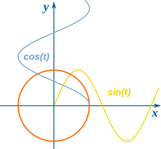
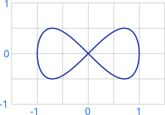

Parametric Equations
A set of equations linked by one or more independent variables (called the parameters).
So instead of y as a function of x, we can have both x and y as functions of a third variable t called the "parameter", which is often time.

Example, here are two functions linked by the parameter "t":
- x = cos(t)
- y = sin(t)
As t goes from 0 to 2π the x and y values make a circle!
It really does work!
Try it yourself with pencil and paper (and a calculator), using values of t from 0 to 2π in steps of 0.2: 0, 0.2, ... 6

Example:
This curve is made using:
- x = a cos(t)
- y = a sin(2t) / 2
Example: Flying bird
Imagine a bird flying through the sky. It is speeding up and at the same time dipping down and up in a curve. As time "t" goes by we can say:
- It's forward motion is speeding up, example: x(t) = t + 0.2t2
- It's height follows a curved path, example: y(t) = 10 + cos(t)
This is a natural way to describe it's motion, and could be harder if we tried to have it in purely y = f(x) style.
Some Shapes as Parametric Equations
y = r sin(t) + k
y = b sin(t) + k
y = pt2 + k
y = b tan(t) + k
Where we use these functions:
- sin() is the sine function
- cos() is the cosine function
- sec() is the secant function
- tan() is the tangent function